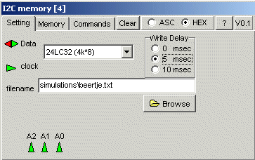

I2C memory
The device performs the most important properties of the I2C EEprom. The types from 16*8 (24LC00) uptill 32k*8 (24LC256) are supported.
Write time is fully implemented and is depending on device and the page(s) to be written. Implementation is worst case, which means 0, 5, 10 msec / page, which can be selected from the list.
All different access methods (although if look well, there are only 2 !!) are implemented.
Not implemented is the minimal timing requirement of the clock and data lines. Though the relative timing of clock and data is implemented (for example, data must be stable during the whole positive clock period).
f there's a filename on startup, the data from this file is loaded into memory. If there's a filename on closing the device/program the data in eeprom will be stored in the file. The dataformat is a normal textfile, just like the layout of the HEX memory view.
